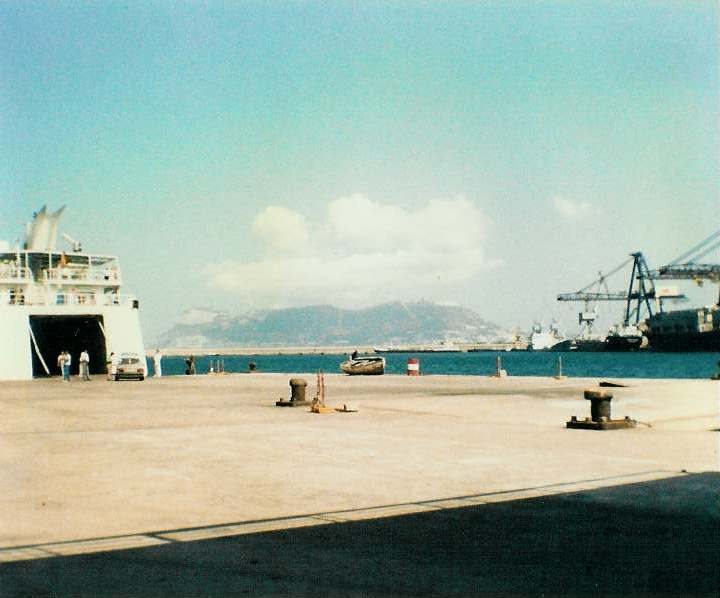
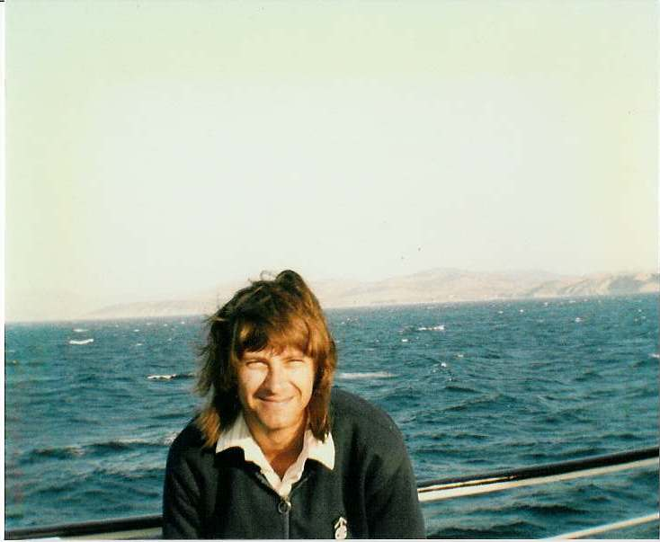
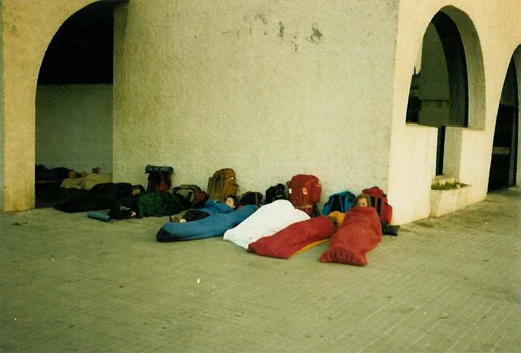

Inter Rail 1986 Day 10
Monday 1st September 1986
The alarm went off at 7.00am. Eli washed her hair quickly and then Jon went in for a shower. Mrs Women then
arrived to tell us that showers before 8.00am were out as they woke people. Jon's hot shower immediately turned cold. We were going to ask for
a reduction in the bill but in the end we couldn't be arsed.

Had to jog trot to the station to get the train back to Bobadilla. When the guard arrived he informed us that there was a supplement payable
of 1100pts each. All together we only had enough money with us to pay for three of us so we had to try and get him to let us pay when we got
off in Bobadilla and changed some money. He then realised we were not going all the way to Sevilla so the supplement was only 460 each which
we could manage
At Bobadilla we changed for the train to Algeciras and culture shock struck. The entire compartment of the carriage we picked was chock a
block full of Moroccans with mountains of luggage. There was also an obnoxious temper tantrumining kid.
When we got in there was absolute silence to start with but eventually the conversations started up again. The guard took ages to come and
when he did he said there was a supplement payable. We definitely didn't have enough to pay that. We tried to show him the Thomas Cook
timetable showing him there was no supplement payable but to no avail. The threat of being chucked off the train went when he said he would
accept 50 Frenc Francs. Whether or not the supplement was kosher didn't become clear.
Our travelling companions were through travellers from France and had tickets for the entire trip. General uproar ensued as the vast majority
of them had no pesetas left. Mega shouting at and hassling of the guard followed. 1 of the women spoke French, Arabic, a bit of Spanish and
some English. There followed shouting of "He's a thief, bloody Spaniard" and haggling and discussion over how many Swiss francs there were to
the French franc.
One guy refused to pay and manhandling by the guard resulted. Eventually, there was a complete mood change and laughing and smiling occurred
in great quantities. The guard had the same problem in the next compartment and according to some guys at the back of the train, they never
paid the supplement as the guard never made it down to them! Arrived in Algeciras and took ages to get off the train as the Moroccans had
everything but the kitchen sink with them. Lots of hashish haggling encountered on our way to the ferry terminal to check sailing times.
Had a gorgeous prawn omelette & chips with beef + salad plus beer for lunch. There were tonnes of people trying to sell ferry tickets as touts.
To comply with Interail rules we had to get ours at the port proper and thus had to sit and wait for the little man to open his kiosk. When we
finally got our tickets we went upstairs to the embarkation spot. There was a small queue for Customs for passport stamping and boarding
tickets checking, and then we got on the ferry. Spotted a couple of lads who had been food shopping with us before boarding. They told us that
we were in fact on the 3.00pm ferry that was late leaving.

One of the crew walked past with a broad Geordie accent and we found out that a lot of the crew were British. One of the engineers who worked
nights and was wandering around deck turned out to be from Llantwit!. The ferry is half owned by Fred Olsen, the Norwegian firm and 3 yearly
secondments are made. In the summner months they are a passenger ferry, in the winter, after a quick refit, they carry oranges from Casablanca
to Spain. The ferry times were totally to pot due to the 3 million Moroccans working in France. When France shuts for August they all pour home
and at the end of August they all pile back again. The ships were doing 3 runs a day instead of the normal one. ie the ship arrived, disgorged,
turned around, re-engorged and then sailed again regardless of the schedule.
We eventually sailed at 6.00pm. The dolphin watching just out of Algeciras was brilliant. We came across the woman with the brat from the
train as well as the crazy couple of Moroccans who had chatted to us. They told us how nice Agadir was. Just before disappearing downstairs to
gets our passports stamped, Eli and I picked up an admirer; a really disgusting Moroccan with sticky outy eyes.
Arrived at Tangier and yet again queued, to get off the boat. Then queued to have our luggage searched. They made us disgorge the contents of
our rucksacks, and asked if I had a gun! Went to the bureau de change to change sterling to dirhams and that was when the trouble started. The
two English lads who had tagged along with us got talking to Abdullah, an "official guide". He told them daft things about how dangerous the
country was to travel in by night and that he had a pension where we could stay the night to wait for the morning train. Lots more people had
appeared and there was hassling going on everywhere.
I got eveyone to ignore them and we started to head for where I knew the train station was. Moroccans surrounded us and Jon stopped to listen
to them. We got him to move off with us at first and then I started getting hassled. I was shown a dirty, disgusting "identity card" to try and
prove they were kosher, and then told I was a "big woman with big problems" and that I'd arrive back at the ferry terminal without my luggage
in the morning.
Jon and Michael (one of the other lads) stopped again and disappeared with the locals. We were told they'd gone off in a taxi only for them to
reappear a few minutes later. The four of us who has sussed the loclas were headed off and sent to the "shithole" as "not good people".
Couldn't believe Jon and Michael had been taken in by them. We made our final decision to leave for the train station only for the other two
not to follow. A guy in a yellow and black shirt followed us calling me "son of a bitch, son of a pig" and manhandling me. It took a lot of
control not to turn round and let him have one. Kevin, the other lad got kickeed, we were told they'd beat us up and rob everything.
We asked them what they wanted and they tried to sell Roger hashish and told Eli and I they wanted "English pussy". At the ferry terminal exit
Roger managed to find a uniformed guy and after a few more threats the troublemakers wandered away. We tried to get the port guards to do
something about Jon & Michael. Despite them obviously understanding English they forced us to use our limited French both on them and their
superior. Their reaction was - it happens all over the world. Your friends are perfectly safe, We are not animals".
A local in a khaftan said 2 guys had been sent back to Spain but then changed his mind and said 1 tall guy and 1 short guy went in a taxi. We
could do nothing except make our way to Tangier train station where we sat outside on our rucksacks. The atmosphere there was quite interesting.
After about an hour and three quarters the two of them showed up.They had been "brainwashed" into getting into a taxi to go to a pension where
they could leave their bags as we were being fetched to spend the night too. They said they didn't want to go to the pension so they were
taken to a cafe, given a mint tea (which they didn't touch) and offered the choice of a large knife or a quantity of hash.

They were convinced the only way out was to buy the hash. It cost Jon 300 dirhams (about £30) and Michael £60 in travellers cheques
for an egg of hashish plus another 200 dirhams for a guide to get them out of the medina. Talking to some people at the station had told us
that the second half of the scam is to phone the police and tell them that some foreigners are at the railway station with a large qunatity of
hash for which they get paid a finders fee.
If we could have got the egg back to Europe we could probably have made a nice little profit. We decided that it would be safer to get rid of
the hash. Jon "flushed" it down the toilet at the station, the flush being a squeezy bottle of water of some kind. Us lot at the railway station
had already decided that travelling in Morocco was not going to be very enjoyable if this was the start we were off to so to ensure a good,
stress free holiday we should leave immediately.
At first the port guard wouldn't let us through but was pestered into relenting. Back at the ferry terminal Moroccan organisation struck. We
had to go to about six different locations, some twice, in order to get a passport form, a passport stamp, tickets bought and baggage checked.
Had to then sit and wait for the ferry to arrive. Got chatting to two New Zealanders who had just spent 3 weeks in Morocco. From what they
were saying I'm glad we didn't stay. They had the squits permanently whilst there. The food was foul and oily. The trains filthy and the buses
even worse. They did one bus journey with 5 sheep on the roof and a goat in the boot banging his horns the entire journey.
Another journey had the driver and lots of the passengers getting out every 4 hours, and kneeling in prayer towards Mecca. As we waited to
board the ferry, acquaintances from the Lisbon-Villa Real overnight stop got off. We warned them of what had occurred. They hoped that the
train had been kept. I think they ended up having to spend the night at Tangier Railway station. We started off the evening sitting in the
ferry bar but had to leave to look for food (a task in which we failed miserably). The ferry was so crowded we had to move out on deck where
sheltering from the wind was number one concern. The two New Zealanders joined us and most people got into their sleeping bags on deck. I
found a couple of chairs that I tried to sleep on but woke up freezing so moved downstairs avaoiding the piles of vomit and got some shut eye.
The boat docked at 5.00am Spanish time having left at 1.15am Moroccan time. We had to disembark through the car exit and were made to stand in
the carbon dioxide fumes whilst our passports were checked. We trooped off to Algeciras railway station to find it was shut. We moved around
to the side of the station and found some people already bedded down for the night. All eight of us lay down next to them in a neat row, side
by side with not a word spoken and went to sleep.